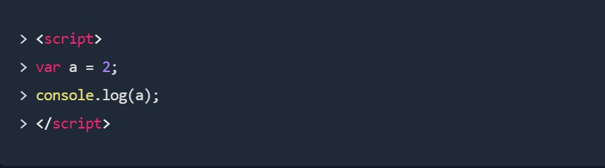
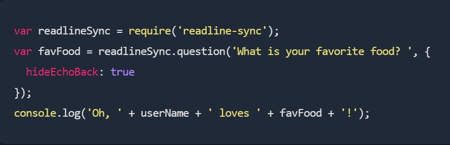
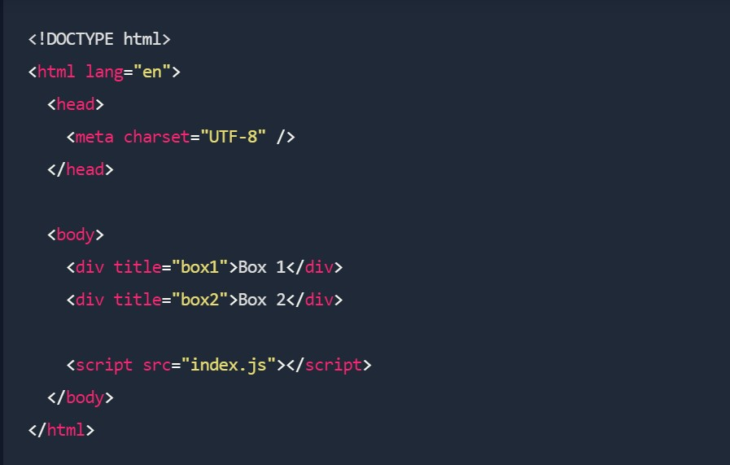
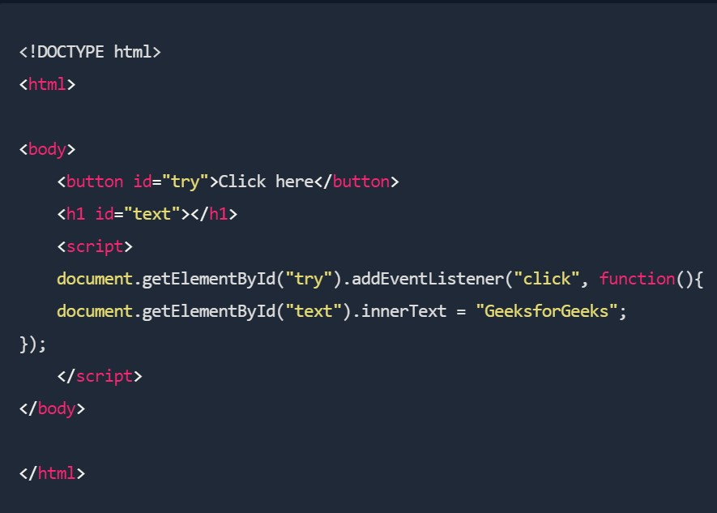

JavaScript is a lightweight programming language that web developers commonly use to create more dynamic interactions when developing web pages, applications, servers, and or even games.
HTML and CSS are used to design the skeleton of the application, but JavaScript makes it dynamic.
To understand it more clearly, let's compare a web application with a human body. Like in the human body there is a skeleton, muscle, and nervous system, similarly, in a web application, there is HTML, CSS, and JavaScript. The HTML works as a skeleton, the CSS as the muscular system, and JavaScript as the nervous system.
var and const both are used to declare javascript variables. The difference is just that var is for a normal variable declaration whose value can be changed, whereas a variable value declared using the const keyword cannot be changed.
Alert: An alert is a popup that has a notice within it.
Prompt: A prompt has an input field and expects the user to interact with it by entering some data.
DemoThe console.log() is a function in JavaScript that is used to print any kind of variables defined before in it or to just print any message that needs to be displayed to the user.
The Readline module provides a way of reading a datastream, one line at a time. Synchronous Readline is used for interactively running to have a conversation with the user via a console.
readlineSync tries to let your script have a conversation with the user via a console, even when the input/output stream is redirected.
The Document method querySelector() returns the first Element within the document that matches the specified selector, or group of selectors. If no matches are found, null is returned.
To get the DOM elements, which have an attribute starting with a specific value, pass the following selector to the querySelectorAll method - '[title^="box"]'. The selector matches all of the DOM elements that have a *title* attribute that starts with the string *box*.
The addEventListener() is an inbuilt function in JavaScript that takes the event to listen for, and a second argument to be called whenever the described event gets fired. Any number of event handlers can be added to a single element without overwriting existing event handlers.
After understanding these commands, you will be capable of building your very first application using javascript.
The more you practice, the better you will get at it. So don't give up even when you think you can't do it.